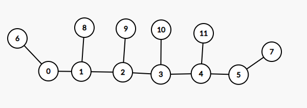
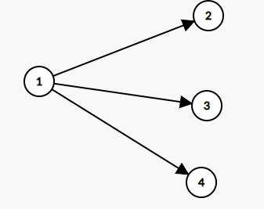

一棵 \(n\) 个节点的树，点有点权，边有边权。求这棵树的一个点 \(r\) 使下面的式子最小： \[ \sum_{i \in Tree} val_i \times dist(i, r)^{\frac32} \] \(n \le 2 \times 10^5, val_i, dist(u, v) \ge 0\)。
带权重心问题，有点妙。
设 \[ f(x) = \sum_{i \in Tree} val_i \times dist(i, x)^{\frac32} \] 这里函数 \(f\) 的定义域是整棵树（不仅包括原来的点，还包括边上的点 ）。
下面研究这个函数的性质。
树上的函数显然不太方便研究，所以考虑换一个 \(\mathbf R\) 上的函数研究。
随便选择一条树上路径 \(u \rightarrow v\) 作为 \(x\) 轴，把 \(u\) 当作原点，这样 \(x\) 就是路径上的点到 \(u\) 的距离。

这里以 \(0 \rightarrow 5\) 为例，节点 \(6 \dots 11\) 分别代表其父亲的一些子树。
记 \(d_i = dist(i, 0)\)，路径上的点分别考虑贡献： \[ f_i(x) = \begin{cases} \sum_{c \in subtree(i)} val_i\left (dist(i, c) + d_i - x\right)^\frac32 & x \le d_i\\ \sum_{c \in subtree(i)} val_i\left(dist(i, c) + x - d_i\right)^\frac32 & x > d_i \end{cases}\\ f(x) = f_0(x) + f_1(x) + f_2(x) + f_3(x) + f_4(x) + f_5(x) \] 发现 \(f_i(x)\) 可以写成下面这种形式（其中 \(c_1-x \ge 0, c_2 + x \ge 0\)） \[ f_i(x) = \begin{cases} \sum v(c_1 - x)^\frac32 & x \le d_i\\ \sum v(c_2 + x)^\frac32 & x > d_i \end{cases} \]
求导（这里分段函数的分界点处显然可导） \[ f_i'(x) = \begin{cases} -\frac32\sum v(c_1 - x)^\frac12 & x \le d_i\\ \frac32\sum v(c_2 + x)^\frac12 & x > d_i \end{cases} \\ f_i''(x) = \begin{cases} \frac34\sum v(c_1 - x)^{-\frac12} & x \le d_i\\ \frac34\sum v(c_2 + x)^{-\frac12} & x > d_i \end{cases} \] 发现 \(f''_i(x) \ge 0\)，所以 \(f''(x) = \sum_if''_i(x) \ge 0\)，所以 \(f(x)\) 是个凸函数，至多一个最小值。
注意到对于树上任意路径这个结论都成立，所以固定起点 \(u\)，对于所有终点 \(v\) 求一次最小值就可以得到答案。
下图中 \(2, 3, 4\) 都代表子树，假设当前在 \(1\) ，需要考虑 \(1 \rightarrow 2, 3, 4 \rightarrow \dots\) 几种路径。

对于路径 \(1 \rightarrow i \rightarrow \dots\)，有 \[ \begin{aligned} f'(0)_i &= \frac32\left(\sum_{x\in 0} val_xdist(x, 1)^\frac12 - \sum_{x\in i}val_xdist(x, 1)^\frac12\right)\\ &= \frac32\left(\sum_{x}val_xdist(x, 1)^\frac12 - 2\sum_{x\in i}val_xdist(x, 1)^\frac12\right) \end{aligned} \] 观察这个式子，发现最多只有一个 \(i\) 会使导数小于零，就是使 \(\sum_{x \in i}val_xdist(x, i)^{\frac12}\) 最大的那个。
所以我们只需要向导数小于零的那个方向走就可以了。
假如从根出发向叶子的方向走，最多走 \(maxdep\) 次，每次需要花 \(O(n)\) 时间计算答案和导数， 最坏是 \(O(n^2)\) 的，考虑优化。
每次走到一个节点时，需要考虑的节点范围会缩小到当前节点的子树内，如果每次找到当前子树的重心，每次规模会减半，这样最多走 \(\log n\) 次，最终复杂度 \(O(n \log n)\)。
#include <bits/stdc++.h>
template <class T, class U>
inline bool smin(T &x, const U &y) { return y < x ? x = y, 1 : 0; }
template <class T, class U>
inline bool smax(T &x, const U &y) { return x < y ? x = y, 1 : 0; }
constexpr int N(2e5 + 5);
int n, a[N], head[N];
struct Edge {
int v, w, next;
} e[N << 1];
void addEdge(int x, int y, int z) {
static int c = 0;
e[++c] = { y, z, head[x] }, head[x] = c;
e[++c] = { x, z, head[y] }, head[y] = c;
}
bool vis[N];
int rt, tSize, mSize, siz[N];
void getSize(int x, int fa) {
siz[x] = 1;
for (int i = head[x]; i; i = e[i].next) {
int y = e[i].v;
if (y == fa || vis[y]) continue;
getSize(y, x);
siz[x] += siz[y];
}
}
void findrt(int x, int fa) {
int max = tSize - siz[x];
for (int i = head[x]; i; i = e[i].next) {
int y = e[i].v;
if (y == fa || vis[y]) continue;
findrt(y, x);
smax(max, siz[y]);
}
if (smin(mSize, max)) rt = x;
}
double ans = INFINITY, f, diff;
int pos;
void dfs(int x, int fa, int d) {
f += a[x] * sqrt(d) * d, diff += a[x] * sqrt(d);
for (int i = head[x]; i; i = e[i].next) {
int y = e[i].v;
if (y == fa) continue;
dfs(y, x, d + e[i].w);
}
}
void solve(int x) {
if (vis[x]) return;
vis[x] = 1;
int p;
double s = 0, m = 0;
f = 0;
for (int i = head[x]; i; i = e[i].next) {
int y = e[i].v;
diff = 0;
dfs(y, x, e[i].w);
if (smax(m, diff)) p = y;
s += diff;
}
if (smin(ans, f)) pos = x;
if (m * 2 > s && !vis[p]) {
getSize(p, 0);
tSize = mSize = siz[p];
findrt(p, 0);
solve(rt);
}
}
int main() {
std::ios::sync_with_stdio(false);
std::cin.tie(nullptr);
std::cin >> n;
for (int i = 1; i <= n; i++) std::cin >> a[i];
for (int i = 1, x, y, z; i < n; i++) {
std::cin >> x >> y >> z;
addEdge(x, y, z);
}
getSize(1, 0), tSize = mSize = n, findrt(1, 0), solve(rt);
printf("%d %.10f", pos, ans);
return 0;
}最后修改于 2021-08-13